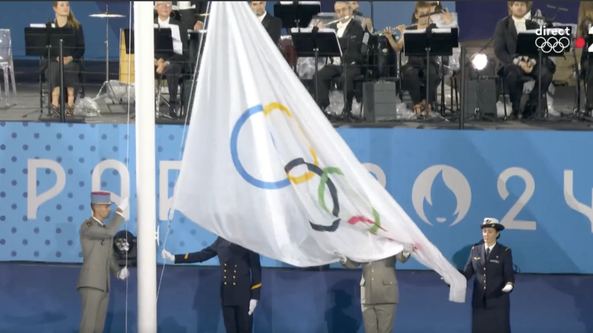

杂谈：调整心态和怎么做

- huuhghhgyg
- 1 min read

在意气风发的时候容易展现锐气，在失魂落魄的时候容易多愁善感。我发现我不太喜欢各种容易存在比较的活动，特别是在我容易失败或落下风的活动中，也许是我害怕失败。但我现在还有一个想法，我想尽量避免比较，因为比较会带来输赢，赢多了让人自大，输多了容易影响心情，让人产生嫉妒、甚至让人抓狂。而相反地，避免比较能够减少这些不好的情感产生，让注意力回归到自己身上，专注于自己的进度和计划；而不是将目光放到别人身上，不停地比较，让自己焦虑。做好自己就很好了。
面对比较心理：寻找平衡之道
研究生阶段的学术环境与本科时期有着显著的不同。在本科和之前的阶段，分数与排名构成了评价体系的核心，这种以分数和排名为中心的体系在无形之中塑造了一种竞争意识，所以这么多年下来形成的潜意识就是追赶，特别是排名上的追赶。
然而，进入研究生阶段，研究方向的细化以及学术圈子的缩小，使得原本以排名为导向的竞争模式逐渐失效。我相信在这种体系下，我已经逐步构建了一套适合自身发展的模式，并尽可能地融入了有意义的内容。但是因为总体的评价体系发生了变化，所以使得这套自驱体系随之失效/崩溃。
而由于这么多年的惯性，身处人数有限的研究小组，与同门进行比较的心理便容易滋生。特别是当同门进展迅速，而自身进度相对滞后时，压力与自我怀疑也随之而来。不得不承认，这种比较所带来的负面影响是不容忽视的。在之前的经历中，我一直奉行“合适才是最好的”和“宁做虎头不做凤尾”的原则，这样不仅巧妙地避开了困境，还能依靠环境建立驱动力。另一方面，这也表明容错率其实很高，只要不是太差，都有可能需要处理 underqualified 的问题，所以也总是要学会怎么处理这种情况，调整心态。
前些日子，我在小红书上偶然看到一篇探讨内驱力的帖子，大意是“自驱力强的人关注自己的进步，而不是关注他人”。这句话点明了比较的弊端：过度关注他人，本质上是一种比较，而比较往往会导致负面情绪。每个人的学习节奏与进程不尽相同，有人擅长快速突破，也有人更适合稳扎稳打。倘若一味地将自身的不足与他人的长处相比，眼里就看的永远都是最好的别人们，看到是最差的自己，则很容易陷入自我否定的循环之中。所以更好的一个状态还是达到关注于 inner attention，尽管道理如此，但在实践中却难以完全避免比较。长久以来的竞争惯性使得人们习惯于关注周围人的动态，并试图从中获取信息与动力。
这就产生了一个矛盾：比较一方面会引发焦虑与压力，另一方面却也能在一定程度上提供前进的动力。特别是对于那些在学习后期容易动力不足的人而言，彻底摒弃比较或许会导致松懈。那么，如何在研究生阶段找到一个平衡点呢？是彻底告别比较，专注于自身，还是适度保留比较，将其作为一种激励？这个问题，恐怕没有一个普适的答案，还是根据自身的实际情况进行摸索与调整，不断尝试，才能找到最适合自己的前进方式。虽然时间上可能也有压力，但是我觉得还是维持好的心态和心理健康比较重要。意识到问题的时候就已经迈出了解决问题的第一步。
总之，研究生阶段的学习，不仅仅是知识的积累，更是一种心态的调整，是一种自我认知的提升。在这个过程中，不断地调整自己的心态，找到适合自己的学习方式，才能在这个阶段走得更远。（谢谢 GPT，这段结尾写得真好 😘）
隐形的财富：成绩之外的能力与多元发展的力量
在传统的评价体系中，成绩往往被视为衡量个人能力的核心指标。然而，在成绩之外，还存在着许多隐形的财富——那些难以被量化却同样重要的能力。这些能力也参与构成了一个人的综合实力，并且我认为它们在很多时候至关重要。
记得高中时期，我们曾做过一次职业优势测评（似乎是霍兰德职业兴趣测试）。测试结果表明，兴趣类型相近的人可以形成合力，在职业发展上更具优势。对于这个观点，我至今仍持保留态度。当一个人在职业方面表现突出时，往往锐气十足；而当他在职业上遭遇挫折时，如果没有其他兴趣作为精神的避风港，又缺乏良好的自我调节能力，那么他很可能更容易崩溃。相反，我认为分散的兴趣具有其独特的价值。比如，一个理工科背景的人如果拥有良好的审美，这在另一个维度上将构成巨大的优势，而这种优势是其他人难以轻易弥补的（例如，许多理工科学生甚至缺乏基本的美术素养，连排版都一塌糊涂）。此外，当遇到挫折时，多元的兴趣爱好可以提供有效的缓冲，帮助个体更快地调整状态，或者更好地承受持续的压力。当然，这也可能意味着在某些时候难以与他人找到共同话题，就像他们在热烈讨论着英雄联盟，而你却在思考平面设计和排版；他们随口哼唱着流行歌曲，而你却不知道刘德华是歌手还是演员（查了一下好像都是）。
另一方面，即使身处逆境，也要注重经验的积累，并将所学所做进行有效的固化——建立属于自己的知识索引。这既方便自己日后学习、参考、整理和归类，也便于快速回顾和上手使用。让时间的投入更高效地转化为自身的资产和财富。
从“一次做对”到“反复修正”：实践中的调整
运营管理里面通常强调一次就做对，认为这样最节省时间。学习了这个理论后，我也尽可能多地在工作和学习中去用，希望能提高效率。但是在实际的项目工作中，却往往存在一个多方不断“battle”，交换信息、来回修正的过程，有点类似德尔菲法。通过不断地改，最后才能得到一个多方比较认可的方案。这就和之前运营管理里面强调的 “一次做对” 的原则有些冲突。因为第一次做得再好，其实在后续的 “battle” 过程中还是免不了要改。所以这是一个会让人感到困惑和迷茫的地方。所以感觉读研的心态和本科大作业/考试一次就做好的这种心态就不太一样，因为项目涉及到多个人，而不再是自己一个人的工作，而且还包含多方面的不确定性。
其实，不只是团队项目，我逐渐发现自己的事情也是这样。在现实中，越复杂的事情越难保证一次就能全做对，总是要改来改去。如果改得不多还好，一旦需要大改，那之前做得太认真也可能白费。所以，倒不如先粗略地做一下，把整体先跑起来，然后有时间再慢慢改。（如果实在没时间也就罢了，天好像也塌不下来。这点有待验证，但我目前相信是这样的 ✅）

巴黎奥运会开幕式上，由于工作人员操作失误，奥运会旗帜被反挂
因此，有必要重新考虑工作量、时间限制，重新决定内容的质量要求，而不是一味要求自己做到完美。